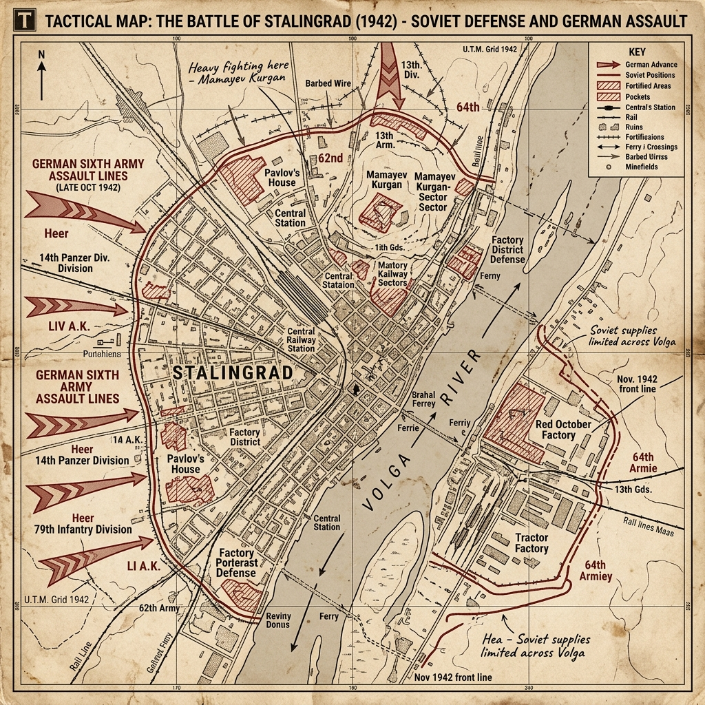

Strategic Context & The Drive to the Volga
By the spring of 1942, the German Wehrmacht had recovered from its defeat at Moscow. Recognizing that Germany lacked the resources to launch a general offensive along the entire Eastern Front, Hitler approved Fall Blau (Case Blue)—a campaign directed into southern Russia. The goal was to capture the oil fields of Maikop, Grozny, and Baku in the Caucasus, which would fuel the German war machine and starve the Soviet military of fuel. Soviet official histories often date the Stalingrad strategic defensive from mid-July 1942; the apocalyptic battle for the city itself is usually marked from the great Luftwaffe raid and German advance to the Volga on 23 August.
To protect the left flank of the advance, German Army Group B was ordered to advance to the Volga River and capture or destroy the industrial city of Stalingrad. The city was a major transport hub and bore the name of Joseph Stalin, making it an ideological prize for Hitler. As the German 6th Army under General Friedrich Paulus advanced, Hitler split his forces, ordering both the Caucasus oil drive and the capture of Stalingrad to occur simultaneously, stretching his logistics to the limit.
Military Doctrines & War Plans
The German doctrine of mobile warfare was suited for the open Russian steppe, where Panzers could envelop and destroy enemy forces. However, once the 6th Army entered the ruins of Stalingrad, this mobility was neutralized. The Germans were forced into close-quarters combat, where their tactical superiority in coordination and communications was less effective.
The Soviet plan, developed by General Vasily Chuikov, commander of the 62nd Army, relied on attrition. Chuikov ordered his troops to 'hug the enemy'—to keep their front lines within hand-grenade distance of the Germans. This prevented the Luftwaffe and German artillery from bombing Soviet positions for fear of hitting their own men, forcing the Germans to fight for every building, room, and sewer.
Weapons, Technology, and Logistics
The battle was characterized by urban warfare weapons. Snipers played a major role, using Mosin-Nagant and Karabiner 98k rifles equipped with telescopic sights to terrorize enemy patrols. Submachine guns, like the Soviet PPSh-41 and the German MP 40, were favored for their high rate of fire in close quarters.
Logistics were a nightmare for both sides. The Soviets were forced to ferry reinforcements and supplies across the wide Volga River under constant German artillery fire and air attacks. The Germans relied on a single rail line across the steppe, which was vulnerable to partisan attacks and struggled to supply the 6th Army with fuel and ammunition.
Opening Moves & Initial Clash
The battle began on August 23, 1942, with a massive bombing raid by Luftflotte 4, which dropped thousands of tons of bombs on Stalingrad, reducing the city to rubble and killing over 40,000 civilians. German armored patrols reached the Volga north of the city on the same day.
In September, the 6th Army entered the city, initiating the street fighting. The Germans advanced slowly, capturing the central railway station and the Mamayev Kurgan hill, only to face counterattacks the next day. The fighting centered on major industrial sites, including the Red October Steel Factory and the Barrikady Gun Factory, where workers produced and repaired tanks directly on the front lines.
The Rat War (Rattenkrieg)
The combat inside the ruined city was brutal, described by German soldiers as Rattenkrieg (Rat War). The battle was fought in three dimensions: in sewers, cellars, ruins, and attics. Snipers, most notably Vasily Zaytsev, who killed over 220 German soldiers during the battle, became national heroes, while their stories were used by Soviet propaganda to boost morale.
Buildings like 'Pavlov's House'—a four-story apartment building fortified by Sergeant Yakov Pavlov—became famous. Pavlov's small squad defended the building for 58 days against repeated German attacks, using machine guns, anti-tank rifles, and mines, and proving that a small, determined force could hold out in the ruins.
The Soviet Encirclement: Operation Uranus
While the German 6th Army was focused on capturing the last pockets of Soviet resistance along the Volga, the Soviet High Command (Stavka), led by Zhukov and Vasilevsky, secretly massed over a million men on the northern and southern flanks of the city. These flanks were guarded by Romanian, Italian, and Hungarian armies, which lacked heavy anti-tank weapons.
On November 19, 1942, the Soviets launched Operation Uranus. The Red Army smashed through the Romanian defenses, and within four days, the two pincer arms met at Kalach-na-Donu, encircling the German 6th Army, along with parts of the 4th Panzer Army and Romanian units, trapping roughly a quarter-million Axis troops in and around the city (the final pocket would shrink through attrition before the January–February surrenders).
The Siege & The Failed Relief Campaign
General Paulus requested permission to break out of the encirclement, but Hitler refused, ordering the 6th Army to hold its positions. Reichsmarschall Hermann Göring assured Hitler that the Luftwaffe could supply the trapped army by air, claiming they could deliver 300 tons of supplies daily. In reality, the Luftwaffe lacked the transport aircraft, and Soviet fighters and anti-aircraft fire decimated their formations, averaging less than 90 tons of supplies a day.
In December, Field Marshal Erich von Manstein launched Operation Winter Storm, an armored relief attempt to break the Soviet ring. However, they were halted 30 miles from the pocket. Hitler refused to allow Paulus to launch a coordinated breakout to meet Manstein's forces, condemning the 6th Army to starvation and freezing temperatures.
Surrender and Tragedy
By January 1943, the trapped German soldiers were starving, freezing, and running out of ammunition. The Soviets launched Operation Ring, systematically crushing the pocket. On January 30, Hitler promoted Paulus to Field Marshal, noting that no German field marshal had ever surrendered, implying Paulus should commit suicide.
Paulus refused suicide, and on January 31, 1943, he surrendered his headquarters in the southern pocket. Remaining Axis forces in the northern pocket capitulated on February 2. Approximately 91,000 Axis soldiers went into captivity at the end of the battle, including 24 generals. Most of the German prisoners died of typhus, malnutrition, and exposure in Soviet camps; only about 5,000–6,000 lived to return to Germany years after the war.
The Aftermath & Strategic Consequences
The Battle of Stalingrad was the turning point of the war in Europe. The Wehrmacht lost an entire field army, along with hundreds of thousands of allied Axis troops, armor, and aircraft. This defeat broke the back of the German offensive capability on the Eastern Front, forcing them onto a permanent defensive retreat.
The victory boosted Allied morale and shattered the myth of German military invincibility. It confirmed the Red Army's capability in planning and executing large-scale encirclement operations, and marked the start of the long Soviet advance that would lead to Berlin.
Historical Legacy & Long-term Impact
Stalingrad remains a symbol of urban warfare, sacrifice, and military turning points. The battle's scale and high casualty rate make it one of the deadliest engagements in human history. The Mamayev Kurgan hill in modern Volgograd is dominated by 'The Motherland Calls' statue, commemorating the Soviet soldiers who fell during the defense of the city.
The battle also highlights the disastrous impact of Hitler's ideological obsessions and micromanagement on military operations, which overrode the warnings of his generals and condemned a quarter-million soldiers to death.
The Axis Perspective
From the German side, Stalingrad began as a flank-security and prestige objective that metastasized into an obsession. Mobile warfare that had worked on the steppe died in the rubble; officers trained for envelopment found themselves counting blocks and basements. Hitler's refusal to authorize an early breakout after encirclement turned an operational crisis into a death sentence for the Sixth Army.
Hermann Göring's promise that the Luftwaffe could supply the pocket by air was a fantasy measured in hundreds of tons a day and delivered in far less. Inside the Kessel, men slaughtered remaining horses, burned furniture for warmth, and watched typhus and frostbite do what Soviet artillery had begun. Permission to fight free never came in time.
The diary of William Hoffman, a German soldier who did not survive the pocket, traces the collapse of belief. In late summer he still wrote of quick victory; by December he recorded: "We are completely isolated... We have eaten the last horses. I am ready for anything, but I cannot believe that we have been abandoned by the Führer."
When Paulus surrendered in late January–early February 1943—hours after a field-marshal's baton intended to imply suicide rather than captivity—the German home front absorbed a shock propaganda could not fully mask. Goebbels's later 'Total War' mobilization was, in part, an answer to Stalingrad: the moment many Germans first understood that the war in the East could be lost.
Tactical Map & Theater of Operations
An operational view of the urban sectors and defensive strongpoints within the city:

Figure: Battle of Stalingrad, 1942: Mapping the urban combat sectors along the Volga River, key factory defenses, and the Soviet outer pocket lines.
Unusual and Little-Known Facts
Stalingrad's horror is well known. Less familiar are the industrial surrealism of the fighting, the multinational Axis army that died there, and the propaganda legends that grew out of the rubble.
Tanks sometimes rolled straight from the factory floor into combat. At the Dzerzhinsky Tractor Factory and other plants, workers assembled and repaired armored vehicles under fire; unfinished machines could be driven into the fight with minimal testing—an image of total war more extreme than most Western factories ever approached.
The battle was never only a German–Soviet duel. Romanian, Italian, and Hungarian armies held long stretches of the flanks along the Don. When Operation Uranus smashed those sectors in November 1942, the trap closed on Paulus's Sixth Army—making Stalingrad a multinational Axis catastrophe.
Pavlov's House became a legend of urban holdout. A small Soviet garrison defending a fortified apartment building reportedly held out for about fifty-eight days against repeated assaults—longer, as Soviet propaganda loved to note, than some entire national campaigns of 1940. The story was burnished for morale, but the underlying truth of microscopic, building-by-building war was real.
The sniper duel between Vasily Zaytsev and a German master marksman (often named 'Major König') is largely mythic embroidery. Zaytsev was a genuine and deadly sniper; the cinematic one-on-one hunt popularized after the war is poorly supported by German records and is best read as wartime legend layered on real sharpshooting.
Hitler promoted Friedrich Paulus to field marshal on 30 January 1943 expecting him to die rather than surrender—no German field marshal had ever been captured alive. Paulus surrendered the next day anyway, breaking the intended script and handing the Soviets a propaganda prize of the highest rank.
These details do not replace the main operational story—but they are often the ones that stick, because they reveal contingency, myth-making, and human texture beneath the familiar headlines.
Archives, Primary Sources & Further Reading
To read diaries, operational logs, and research files on the Battle of Stalingrad:
- Imperial War Museums — What You Need to Know About the Battle of Stalingrad Concise IWM overview of the campaign, urban fighting, and strategic turning point.
- National WWII Museum — Stalingrad and the Eastern Front Museum articles and context on the Eastern Front and the 1942–43 turning of the war.
- Volgograd State Panoramic Museum of the Battle of Stalingrad Russian museum site for the battle, memorial landscape, and local collections in modern Volgograd.